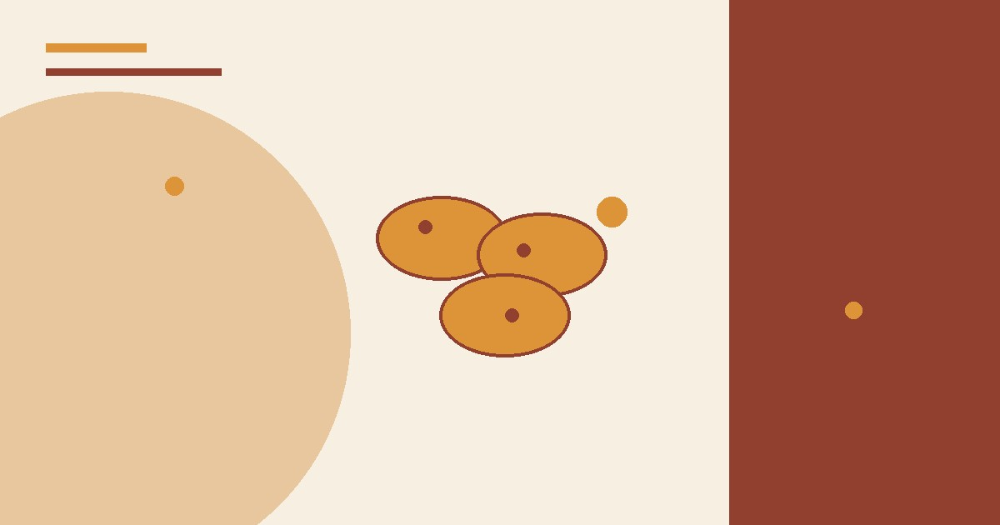
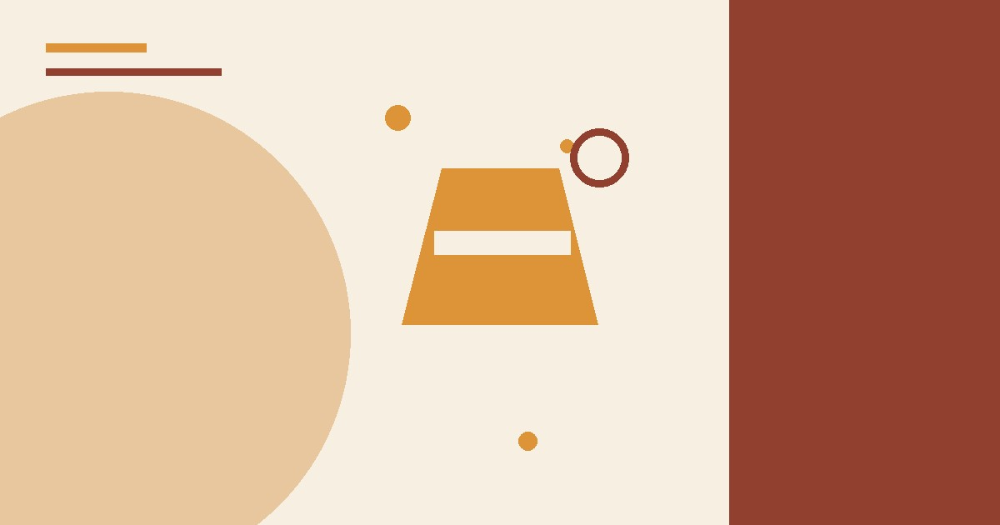
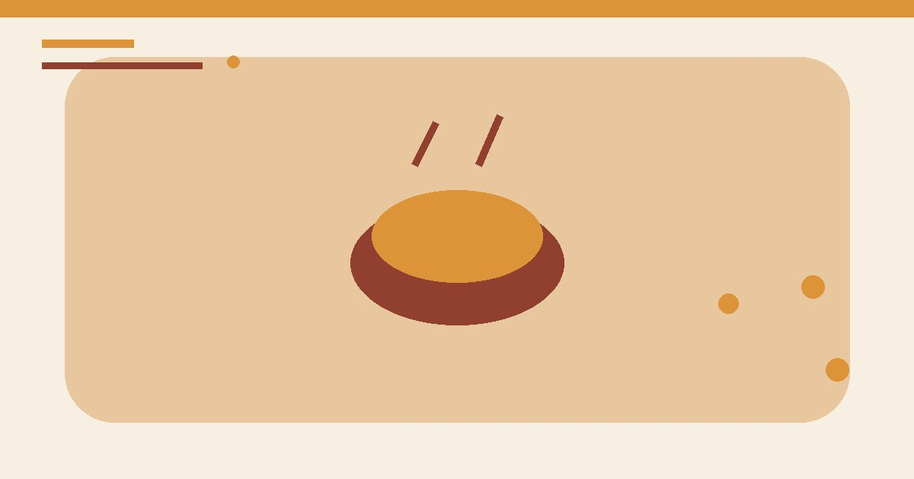
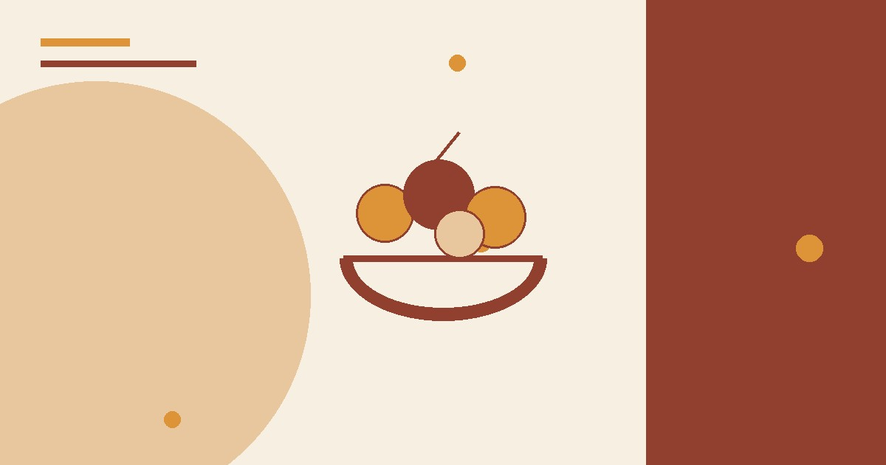

وصفات لذيذة
مناقيش الزعتر: وصفة بيتية سهلة واقتصادية خطوة بخطوة
طريقة مناقيش الزعتر في البيت بمقادير موزونة: عجينة طرية، تخمير صحيح، خلطة زعتر متوازنة وخبز على حرارة مرتفعة.
طريقة عمل كيكة البرتقال الهشة بدون فرن باستخدام القدر: مكونات بسيطة، خطوات واضحة، ونصائح للحصول على كيك رطب وهش.

استخدم قدرًا سميكًا مناسبًا للموقد وغطاءً ثابتًا، وأبعد المقبض عن الحافة. لا تضع وعاءً غير مصمم للحرارة المباشرة، ولا تترك القدر دون مراقبة.
أشهر عذر لعدم عمل الكيك في البيت هو غياب الفرن. لكن الحقيقة أن الكيك يمكن أن يُطهى ببراعة على الموقد مباشرة، في قدر عادي، بنتيجة هشة ورطبة قد تفوق كيك الفرن. إليك وصفة كيكة البرتقال بطريقة القدر، مع كل التفاصيل التي تضمن نجاحها من أول مرة.
القدر المغلق يعمل كفرن صغير: البخار المتصاعد من قاع القدر يسخن الغطاء من الداخل فيخبز سطح الكيك بالتساوي، تمامًا كما يفعل هواء الفرن الساخن. هذا يعني أن الكيك ينضج من الأسفل والأعلى معًا، وتحصل على نتيجة هشة ورطبة في آن واحد.
بين 40 و50 دقيقة حسب قطر القدر وقوة النار. اختبر بالعود بعد 40 دقيقة، وإذا لم ينضج أعد الغطاء وانتظر 5 دقائق أخرى.
نعم، نفس الطريقة تعمل مع عصير التفاح، أو الحليب مع قليل من بشر الليمون، أو حتى عصير الرمان. كل فاكهة تعطي نكهتها الخاصة.
الكيكة الرطبة تحفظ في علبة محكمة بدرجة حرارة الغرفة 3 أيام، وفي الثلاجة أسبوعًا. يمكنك أيضًا تغليفها وتخزينها في الفريزر شهرًا كاملًا.
قدّم الكيكة مع قطر بارد بسيط (سكر وماء وملعقة ماء زهر)، أو مع طبقة شوكولاتة ذائبة، أو ببساطة مرشوشة بالسكر البودرة مع كوب شاي. رشّة قشر البرتقال المبشور فوقها تضيف لمسة أنيقة.
غياب الفرن لم يعد عذرًا بعد اليوم. بهذه الوصفة البسيطة وطريقة القدر الواضحة، ستحصل على كيكة برتقال هشة وعطرية تسرّ عائلتك، وتثبت أن المطبخ البسيط قادر على إنتاج ألذ الحلويات.
رُوجعت المعلومات العامة في هذا المقال بالاستناد إلى المصادر التالية. الروابط الخارجية قد تُحدّث محتواها بمرور الوقت.

طريقة مناقيش الزعتر في البيت بمقادير موزونة: عجينة طرية، تخمير صحيح، خلطة زعتر متوازنة وخبز على حرارة مرتفعة.

وصفة شوربة العدس التقليدية خطوة بخطوة: المكونات، طريقة التحضير، أسرار القوام الكريمي والنكهة، وأخطاء شائعة يجب تجنبها.

وصفة سلطة الفواكه المنعشة: اختيار الفواكه الموسمية، تقطيع وتحضير صحيح، صوص العسل والليمون والنعناع، وأفكار تقديم مميزة.